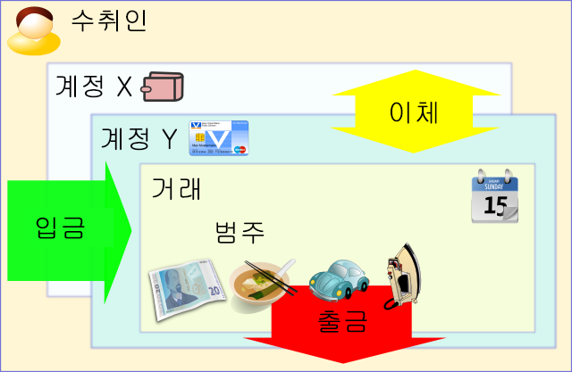

Money Manager Ex (MMEX)는 무료, 오픈 소스, 크로스 플랫폼, 사용하기 쉬운 개인 재무 소프트웨어입니다. 이 소프트웨어는 재무를 정리하고 현금 흐름을 추적하는 데 도움을 줍니다.
MMEX는 개인 재무 애플리케이션에서 사용자 90%가 원하는 모든 기본 기능을 포함하고 있습니다. 설계 목표는 단순성과 사용자 친화성에 집중하는 것이며, 매일 사용할 수 있는 애플리케이션을 지향합니다.
MMEX는 누구나 돈, 통화, 자산, 지출 습관을 추적할 수 있도록 돕는 금융 관리 시스템입니다. MMEX는 단순한 원칙에 기반하여, 재무나 일반적인 부기 지식이 거의 없거나 전혀 없는 사람도 재무를 성공적으로 관리할 수 있도록 설계되었습니다. MMEX는 실제 금융 세계를 모델링함으로써 사용자가 개인 재무를 관리하는 데 도움을 줍니다. MMEX는 무료이며 오픈 소스 소프트웨어입니다.
MMEX의 주요 목표는 재무 정보를 추적하는 과정을 단순화하는 것입니다. 이는 사용하기 쉬운 프로그램을 통해, 필요할 때마다 정기적으로 사용할 수 있도록 하여 돈이 어디서 들어오는지, 더 중요한 것은 어디로 나가는지를 추적하고 이를 통해 보다 현명한 재무 결정을 내릴 수 있도록 돕는 데 있습니다.
MMEX는 계정 잔액을 조정하고 재무를 정리, 관리하며 보고서를 생성할 수 있도록 해주는 컴퓨터용 수표장(checkbook)으로 생각할 수 있습니다.
MMEX는 재무 가치를 지속적으로 파악하는 데에도 도움이 됩니다.
이 설명서의 목적은 독자에게 MMEX 사용에 대한 기본적인 지침을 제공하는 것입니다. 이 설명서는 프로그램이 발전함에 따라 함께 발전할 것입니다. 따라서 업데이트할 때마다 도움말 시스템을 확인하고, 새로운 기능과 MMEX를 더 잘 활용하는 방법을 확인하세요.
재무를 체계적으로 관리하기 위해서는 어느 정도의 절제가 필요합니다. 우리가 얼마의 수입을 얻고 있는지, 그리고 얼마를 지출하고 있는지를 명확히 이해하지 못한다면, 재무 관리는 복잡해질 수 있습니다.
일반적으로 부채는 지출이 수입을 초과하여 현금 흐름이 제한될 때 발생합니다. 이 경우, 필요한 물품을 구매할 수 있도록 현금 흐름을 유지하기 위해 돈을 빌려야 합니다.
더 나은 재무 건강을 위한 첫걸음은 정확한 재무 기록을 유지하는 것입니다. 돈이 어디에 쓰이고 있는지를 명확히 이해할 때에만, 현금 흐름이 빠듯해졌을 때 어떤 지출을 줄여야 할지 현명한 결정을 내릴 수 있습니다. 또한, 돈을 빌려야 하는 상황이 오더라도 부채를 보다 효과적으로 관리할 수 있습니다.
작년에 넷플릭스를 구독하는 데 20만원을 쓴 것을 알고 계셨나요? 그 영화들을 몇 번이나 시청하셨습니까? 어제 발생한 자동차의 예상치 못한 수리비에 그 20만원을 쓰는 것이 더 나았다고 생각하시나요? 물론, 돈을 어떻게 써야 하는지에 대한 정답은 없습니다. 결국, 그 돈을 번 것은 사용자 본인이며, 그것을 어떻게 사용할지는 사용자에게 달려 있습니다. 그러나 그 돈을 더 효율적으로 사용할 수 있는 방법은 늘 존재합니다.
여기에서 개인 재무 소프트웨어의 역할이 중요해집니다. 이러한 소프트웨어는 재무 데이터를 다양하게 분석하여 현재 상황을 더 명확히 이해할 수 있도록 도와줍니다. 다만, 소프트웨어는 입력된 데이터의 품질만큼만 정확할 수 있다는 점을 항상 기억해야 합니다. '잘못된 입력, 잘못된 출력(Garbage In, Garbage Out)'이란 말처럼요. 하지만 개인 재무 소프트웨어를 사용해 볼까 고민하고 있다면, 이미 돈을 보다 가치 있게 사용하는 길에 들어선 것입니다.
이제 MMEX를 어떻게 활용하는지 알아보세요.
MMEX는 실제 세계를 모델링하여 개인 재무를 관리하는 데 도움을 줍니다.
일반적으로 우리는 제공한 서비스나 판매한 제품에 대해 누군가로부터 돈을 받습니다. 이를 시스템에서는 수입 또는 입금으로 간주합니다. 물건을 구매하거나 서비스를 이용할 때 지출하는 돈은 시스템에서 지출 또는 출금으로 간주됩니다. MMEX에서는 돈을 주고받는 사람들을 시스템의 거래처로 봅니다.
우리가 받은 돈을 모두 쓰지 않는다고 가정하면, 돈을 보관할 곳이 필요합니다. 보통은 금융 기관 한 곳 또는 여러 곳, 혹은 주머니 안에 있을 수 있습니다. MMEX에서는 이러한 장소들을 계정으로 태그합니다.
돈을 지출하거나 받을 때 이를 거래로 보고, 수입이나 지출의 이유를 범주로 나타냅니다. 현금을 인출하는 것처럼 한 곳에서 다른 곳으로 돈을 옮겨야 할 때가 있는데, 이런 거래를 이체라고 합니다.
다음 다이어그램과 같이 간단히 표현할 수 있습니다:
또 한 가지 중요한 점은 거래를 수행할 때 사용하는 통화입니다.
이 모든 항목들을 추적하고 연결하기 위해 MMEX는 데이터베이스를 사용합니다.
MMEX가 생성하는 데이터베이스는 .mmb 파일로 알려져 있으며,
중요한 파일로 관리해야 합니다. 상황에 따라 암호화 같은 보안 기능을 적용할 수 있는데,
이 경우 .emb 파일로 인식됩니다. 이때 데이터베이스에 비밀번호를 설정할 수 있으며,
MMEX를 열 때마다 비밀번호를 입력해야 합니다.
모든 컴퓨터 시스템과 마찬가지로 우리가 생성하는 데이터는 중요하므로 시스템 오류에 대비해 보호할 필요가 있습니다. MMEX에는 데이터베이스를 열 때와 변경 사항이 감지되었을 때 날짜가 표시된 백업본을 생성하는 백업 시스템이 있습니다. 시스템이 초기화되거나 변경 사항이 감지되어 종료될 때 각 데이터베이스마다 최대 4개의 백업본이 유지됩니다.
.mmb 또는 .emb 데이터베이스 파일을 정기적으로 백업하십시오..mmb 또는 .emb 데이터베이스 파일을 백업하십시오.
MMEX가 처음 시작될 때, 마지막으로 열었던 데이터베이스를 불러오려고 시도합니다. 데이터베이스가 없으면 기존 데이터베이스를 열거나 새로 생성할지 선택할 수 있습니다.
새 데이터베이스 파일을 생성하려면 메뉴에서 파일 → 데이터베이스 만들기…를 선택하십시오.
그러면 새 .mmb 데이터베이스 파일 이름과 저장 위치를 지정하라는
메시지가 나타납니다. 새 데이터베이스 파일이 생성되면
데이터베이스 만들기 마법사가 표시되어 초기화 및 첫 계정 생성에 도움을 줍니다.
데이터베이스 만들기 마법사에서는 기본 통화와 사용자 이름 설정을 요청합니다.
MMEX는 기본적으로 여러 통화 세트를 제공하며, 사용자의 국가 통화 설정에 맞게 사용할 수 있습니다. 새 계정은 이 기본 통화 설정을 기본값으로 사용합니다. 이는 다른 국가의 계정들도 기본 통화 가치로 표시할 수 있게 합니다.
데이터베이스 목적을 구분하기 위해 사용자 이름을 요청하지만, 이는 대시보드와 보고서에 제목으로 표시될 뿐 선택 사항입니다.
이 두 설정은 필요 시 메뉴 도구 → 설정…에서 변경할 수 있습니다.
데이터베이스 이름은 제목 표시줄에 나타나
어느 데이터베이스가 열려 있는지 알려줍니다.
새로 생성된 .mmb 데이터베이스 파일은 암호화되어 있지 않습니다.
MMEX에서 열린 데이터베이스를 암호화하려면 파일 → 데이터베이스를 다음으로 저장… 메뉴를 사용해 파일 이름을 입력하고 암호화된 MMEX 데이터베이스(.emb) 유형을 선택하십시오. 동일한 메뉴에서 "MMEX 데이터베이스(.mmb)" 유형을 선택하면 암호화되지 않은 데이터베이스로 되돌릴 수 있습니다.
새 데이터베이스 파일을 만들 때, 자동으로 새 계정을 만들라는 요청이 나타납니다.
수동으로 새 계정을 만들려면 메뉴에서 계정 → 계정 만들기…을 선택하십시오.
그러면 계정 추가 마법사가 나타납니다. 마법사는 계정 이름과 종류라는 중요한 정보를 입력하도록 도와줍니다. 계정 종류는 변경할 수 없지만, 이름은 계정 정보를 수정할 때 변경할 수 있습니다.
계정 이름: 필수 입력란입니다. 계정 이름은 실제 사용하는 계정과 관련되게
고유하게 정하는 것이 좋습니다. 예를 들어 시티은행에 저축예금과 비자 카드가 있다면,
계정 이름을 시티은행 저축예금
과 시티은행 비자카드
로 지을 수 있습니다.
계정 종류: MMEX는 여러 종류의 계정을 지원합니다.
계정을 올바르게 설정하려면 MMEX에 추가할 계정의 잔액 정보를 준비하는 것이 좋습니다. 이 정보는 최근 은행, 투자, 신용카드 명세서에서 확인할 수 있습니다. 추가로 계좌 번호, 보유 기관, 웹사이트, 연락처 정보, 접근 정보 등 계정 세부사항을 입력할 수 있습니다. 메모란에는 계정에 관한 추가 메모를 작성할 수 있습니다.
대부분의 계정은 잔액이 있습니다. 예를 들어 신용카드 계정에 현재 잔액이 2,304,670원이라면, 초기 잔액란에 이 값을 입력할 수 있습니다. 이후로는 해당 날짜 이후의 거래 내역만 추가하면 됩니다.
계정 상태는 열림 또는 닫힘으로 설정할 수 있습니다. 닫힌 계정은 더 이상 활성 상태가 아닙니다. 이 설정은 탐색기에서 보기를 정리하는 용도로 사용됩니다. 영구적으로 닫힌 계정을 숨기려면 메뉴 도구 → 설정…에서 보기를 변경할 수 있습니다. 자세한 내용은 탐색기 팁을 참조하십시오.
통화: 기본적으로 데이터베이스 생성 시 설정한 기본 통화로 설정됩니다. 이 계정에 연동할 통화를 지정할 수 있으며, 기본 통화와 다를 수도 있습니다.
통화 환율은 메뉴 도구 → 통화 관리자…에서 변경할 수 있습니다.
예를 들어, 한국에 거주하며 원화(KRW)를 쓰지만, 유로화(EUR)를 사용하는 이탈리아 은행 계좌가 있다면, 유로 환율을 조정하여 계정의 실제 가치를 확인할 수 있습니다.
또한 즐겨찾기 계정으로 표시할 수 있으며, 이는 탐색기에 표시되는 계정을 변경하는 데 사용됩니다. 자세한 내용은 탐색기 팁을 참조하십시오.
우리는 1,250만원의 저축 계좌, 500만원의 예금 계좌, 250만원을 빚진 마스터카드, 475만원을 빚진 비자 카드, 23억965만원의 주택 담보 대출 및 미래에 아이들을 대학에 보내기 위한 교육 기금 5,000만원을 가지고 있습니다.
우리는 다음과 같은 계정을 설정할 것입니다:
| 계정 유형 | 계정 이름 | 초기 잔액 |
|---|---|---|
| 예금/저축 | 저축 | ₩12,500,000 |
| 예금 | ₩5,000,000 | |
| 마스터 카드 | -₩2,500,000 | |
| 비자 카드 | -₩4,750,000 | |
| 정기 | 주택 담보 대출 | -₩2,309,650,000 |
| 교육 기금 | ₩50,000,000 |
알림판에서 은행 계정의 잔액이 ₩10,250,000이고, 정기 계정의 잔액은 -₩2,259,650,000로 표시됩니다.
저축 계정에서 마스터카드로 이체 거래를 통해 결제할 경우 알림판의 잔액은 변하지 않습니다. 하지만 저축 계정에서 주택 담보 대출로 결제할 경우 알림판 잔액에 결제 금액이 반영됩니다. 이를 통해 일상적으로 사용할 수 있는 자금을 확인할 수 있습니다. 또한 저축 계정에서 담보 대출 계정로 정기 결제를 예약 거래로 설정할 수도 있습니다.
계정을 만든 후에는 다음 방법으로 계정 정보의 어떤 항목이든 편집할 수 있습니다:
그러면 계정 정보 대화상자가 나타나며, 필요한 항목을 변경할 수 있습니다.
계정 정보를 편집한 후 확인 버튼을 눌러 저장합니다.
새 계정을 생성하고 탐색기 또는 알림판에서 해당 계정을 선택한 후, 다음과 같이 새 거래를 추가할 수 있습니다:
새 거래를 만들 때 대화상자가 나타납니다. 다음 내용을 입력하는 데 사용합니다:
기존 거래를 편집하는 방법은 여러 가지가 있습니다:
위의 어떤 동작을 하든 거래 상세 정보를 담은 대화 상자가 열립니다. 내용을 편집한 후 확인 버튼을 눌러 변경 사항을 저장하세요.
거래는 고정 필터 또는 계정 보기에서 제공되는 거래 필터를 통해 필터링할 수 있습니다. 이를 통해 사용자는 보이는 거래를 필터 조건에 맞는 항목으로 제한할 수 있습니다. 필터링된 거래는 개별적으로 쉽게 선택하여 편집할 수 있습니다.
표시된 거래는 원하는 경우 일괄 삭제할 수도 있습니다.
MMEX에서는 조정됨 및 미조정 거래가 서로 다른 아이콘으로 표시됩니다. 은행 내역을 명세서와 대조하지 않는 경우, 설정에서 거래 생성 시 기본값을 ‘조정됨’으로 지정할 수 있습니다.
일부 거래는 확인하거나 해결해야 할 문제가 있을 수 있습니다. 이러한 거래는 후속 조치 플래그 상태로 표시하세요. MMEX에서는 이 상태가 다른 아이콘으로 표시됩니다.
사용자는 설정의 보기 섹션에 있는 거래 색상 항목에서 7개의 사용자 지정 색상을 설정할 수 있습니다.
입출금 패널에서는 Ctrl+1부터 Ctrl+7까지의 단축키를 사용하여 거래 항목에 사용자 지정 색상을 적용할 수 있습니다.
Ctrl+0을 누르면 거래 색상이 MMEX 기본 색상으로 되돌아갑니다.
MMEX는 사용자가 특정 거래 내역을 찾을 수 있도록 여러 가지 유틸리티를 제공합니다.
거래의 노트 필드는 계정 보기에서 검색할 수 있습니다.
계정 보기의 거래 목록 하단에 있는 돋보기 오른쪽 텍스트 상자에 검색어를 입력하세요.
돋보기 아이콘을 클릭하거나 Enter 키를 눌러 해당 계정의 거래 내역을 검색할 수 있습니다.
검색은 대소문자를 구분합니다.
특정 거래처를 찾으려면 메뉴에서 도구 → 거래처 관리자…를 열어 거래처 관리자를 실행하세요.
거래처 관리 창 하단의 검색 필드에 검색어를 입력하면 대소문자를 구분하지 않고 입력하는 즉시 거래처 목록이 필터링됩니다.
거래처 이름이나 철자를 정확히 모를 경우, ? (물음표) 와일드카드를 단일 문자 대체용으로, * (별표) 와일드카드를 한 개 이상 문자 대체용으로 사용할 수 있습니다.
거래처란 우리에게 돈을 주는 개인 또는 기관, 혹은 우리가 상품과 서비스를 제공하면서 돈을 지불하는 개인 또는 기관을 말합니다.
거래처 관리는 메뉴에서 도구 → 거래처 관리자…를 선택하여 할 수 있습니다.
거래처 관리자가 열리면 새로운 거래처를 추가하거나 기존 거래처를 편집 또는 삭제할 수 있습니다.
새 거래처를 추가하려면:
목록에서 거래처를 선택한 후 편집 또는 삭제 버튼으로 필요한 작업을 수행할 수 있습니다.
거래처를 삭제하려면 해당 거래처를 사용하는 거래가 없어야 합니다. 이를 위해서는 다음과 같은 방법을 사용할 수 있습니다:
이렇게 하면 해당 거래처가 자유로워져 삭제할 수 있게 됩니다.
범주는 지출이 발생하거나 수입이 발생한 이유를 나타냅니다.
범주는 일반적으로 수입이나 지출을 기록하는 데 사용됩니다. MMEX에서는 계정 간 이체도 가능하기 때문에, 이체 내역을 기록할 때도 범주를 사용하는 것이 권장됩니다. 이렇게 하면 대출 상환과 같은 특정 이유로 돈이 이동하는 경우를 파악할 수 있습니다. 이는 전체적인 수입이나 지출로 간주되지 않습니다. 수입과 지출에 동일한 범주를 사용하면 잔액 계산이 어긋날 수 있습니다.
예: 자동차 운영 비용을 기록하려면 다음과 같이 설정할 수 있습니다.
처음 4개의 하위 범주는 지출을 기록하는 데 사용됩니다. 유류비를 어떤 이유로 환급받는 경우에는 '유류비 환급'을 수입 하위 범주로 사용해야 합니다. 이렇게 하면 자동차 운행을 위한 유류비 지출액을 정확히 파악할 수 있습니다. 예산 기능을 사용할 때 더욱 명확해집니다.
새 거래를 추가할 때 여러 개의 범주를 사용하여 거래를 기록할 수 있습니다. 이를 분할 범주라고 합니다.
분할 범주 거래 전체는 출금 또는 입금 중 하나입니다. 분할 내의 각 범주는 전체 거래 유형을 반영해야 하지만, 각 범주는 출금 또는 입금으로 개별 분류할 수 있습니다.
분할 범주가 존재하는 거래는 컨텍스트 메뉴를 통해 쉽게 확인할 수 있습니다.
메뉴 항목 도구 → 범주 관리자…를 사용해 범주를 관리할 수 있습니다. 범주 대화상자가 열리면 새 범주와 하위 범주를 추가할 수 있습니다.
새 범주 추가 방법:
새 하위 범주 추가 방법:
리스트에서 범주나 하위 범주를 선택한 후 편집 버튼을 눌러 이름을 변경할 수 있습니다. 텍스트 상자에서 수정한 뒤 확인 버튼을 누르세요. 삭제도 비슷한 방식으로 리스트에서 수행할 수 있습니다.
이 범주/하위 범주 조합을 사용하는 거래가 없도록 해야 합니다. 방법은 다음과 같습니다:
이렇게 하면 범주가 비워져 삭제할 수 있게 됩니다.
하위 범주는 중첩해서 사용할 수 있습니다. 관련 정보는 다음 링크에서 확인할 수 있습니다: 중첩된 범주 #1477.
TODO, 일부 정보는 다음 링크에서 확인할 수 있습니다: "클래스" 또는 "태그" 추가 #5439.
태그에 대한 정보를 업데이트하려면 다음 문서를 수정하세요: https://github.com/moneymanagerex/moneymanagerex/blob/master/docs/en_US/index.html.
MMEX는 여러 나라에서 사용될 수 있으므로, 사용 국가의 통화를 고려해야 합니다. 새 데이터베이스를 만들 때 기준 통화는 사용자의 국가에서 사용하는 통화로 설정됩니다. 만약 사용자의 통화가 기본 통화 목록에 없으면, 사용자가 직접 통화 목록을 생성할 수 있습니다.
MMEX는 여러 통화를 동시에 사용할 수 있습니다. 각 계정마다 통화 설정이 있으며 기본적으로 기준 통화를 따릅니다. 서로 다른 통화로 설정된 계정에서 생성된 거래는 해당 계정의 통화로 표시됩니다.
통화 관리는 메뉴 항목 도구 → 통화 관리자…를 통해 할 수 있습니다.
새 통화 추가하기:
둘 이상의 통화를 사용할 경우, 기준 환율 대비 환산율을 설정해야 합니다. 이를 통해 통화의 가치를 기준 환율에 맞게 정확히 반영할 수 있습니다.
자동 통화 업데이트를 사용하려면, 해당 통화의 통화 기호(Symbol)가 설정되어 있어야 합니다.
사용자가 은행 거래 CSV 파일을 MMEX가 요구하는 고정 형식으로 미리 맞춰야 하는 문제를 줄이기 위해, MMEX는 필드 순서가 완전히 자유로운 CSV 파일도 가져올 수 있도록 지원합니다.
이 가져오기 기능을 사용하려면, 먼저 가져올 계정을 선택한 후 CSV 파일 내 필드의 순서를 사용자 지정할 수 있도록 가능한 필드 목록에서 선택합니다. 이렇게 지정된 형식 정보를 바탕으로 MMEX가 CSV 파일을 가져옵니다.
MMEX는 다양한 형식의 CSV 파일을 가져올 수 있습니다. 그중 하나는 고정 형식 CSV 파일로,
MMEX가 내보낼 수 있는 CSV 형식과 정확히 일치합니다. 따라서 한 .mmb 데이터베이스 파일에서
다른 .mmb 데이터베이스 파일로 데이터를 옮길 때 유용합니다.
CSV 파일 형식을 쉽게 확인하려면, 계정을 CSV 파일로 내보내서 생성된 형식을 분석해 보세요.
CSV 필드 옵션은 다음과 같습니다:
CSV 파일을 만들 때 입출금 금액에 포함된 쉼표(,)는 제거해야 합니다. LibreOffice Calc 같은 스프레드시트 프로그램을 이용하면 쉽게 처리할 수 있습니다.
QIF 파일에서 가져온 후 모든 거래에는 상태를 나타내는 추적 플래그가 붙습니다. 계정 뷰에서 우클릭 컨텍스트 메뉴의 일괄 상태 설정 명령으로 모든 거래에 이 플래그를 일괄 적용할 수 있습니다.
XML 파일에서 가져오기는 Excel 형식의 XML 파일(Excel의 "XML 스프레드시트 2003" 형식)을 인식합니다. Excel에서 거래를 가져와야 할 경우 권장되는 방법입니다. 가져오기 방법과 필드 선택 방식은 CSV 파일 가져오기와 동일합니다.
Quicken Interchange Format (QIF)는 금융 데이터를 매체(예: 파일)에 읽고 쓰기 위한 공개 규격입니다. QIF 파일은 일반적으로 다음과 같은 구조를 가집니다:
!Type:타입 식별 문자열
[단일 문자 라인 코드]문자열 데이터
...
^
[단일 문자 라인 코드]문자열 데이터
...
^
각 기록은 ^ (캐럿) 문자로 끝납니다.
예시 QIF 거래 기록:
!Type:Bank Header
D6/ 1/94 날짜
T-1,000.00 금액
N1005 번호
PBank Of Mortgage 거래처
^ 거래 종료
QIF는 Open Financial Exchange (OFX)보다 오래된 포맷입니다. 가져온 거래를 현재 계정 정보와 대조할 수 없는 것이 주요 단점 중 하나입니다. 하지만 금융 기관들이 계정 보유자에게 다운로드 가능한 정보를 제공할 때 일반적으로 지원합니다.
MMEX는 특정 QIF 유형의 거래를 계정으로 가져올 수 있습니다 (텍스트 편집기로 열어 `!Type:`을 확인하세요).
QIF 파일에서 가져온 후 모든 거래에는 상태 표시용 후속 조치 플래그가 붙습니다. 계정 보기에서 우클릭 단축 메뉴를 통해 일괄적으로 이 플래그를 설정할 수 있습니다.
MMEX는 NAS, 공유 호스팅, 기타 PHP 기반 웹서버에 설치 가능한 가벼운 WebApp을 제공합니다.
필요한 파일은 WebApp 프로젝트 페이지에서 다운로드할 수 있습니다.
WebApp 시작 방법은 다음과 같습니다:
htaccess.txt 파일명을 .htaccess로 변경하세요 (윈도우에서는 CMD에서 rename 명령어로 변경 필요).
PDO_SQLite 확장 기능을 활성화하세요.이후 브라우저에서 해당 폴더 URL을 열고 최초 설정을 진행하며, MMEX 설정의 가져오기/내보내기 탭에 올바른 URL과 GUID를 입력하세요.
이제 MMEX는 실행 시마다 WebApp에서 새 거래를 받아와 데스크톱 데이터베이스에 자동으로 저장합니다.
모든 주요 거래 관련 설정이 WebApp과 자동 동기화되어, 계정 및 지급/수취인 정보를 미리 준비할 수 있습니다.
MMEX는 고정 형식 CSV 파일로 내보내기를 지원합니다.
이 형식은 MMEX가 가져올 수 있는 CSV 형식과 동일하므로, 서로 다른 .mmb 데이터베이스 파일 간 데이터 이동 시 유용합니다.
CSV 파일 형식을 확인하려면 계정을 CSV로 내보내 생성된 파일을 분석해 보세요.
일반적인 형식은 다음과 같습니다:
MMEX는 XML 파일로 내보내기를 지원합니다. 이 XML 형식은 LibreOffice Calc 같은 스프레드시트 프로그램에서 읽을 수 있습니다. 형식은 CSV와 동일합니다.
MMEX는 계정을 QIF 형식 파일로 내보낼 수 있으며, 이 파일로 다시 계정에 재로드할 수도 있습니다.
예약된 거래란, 미래의 특정 날짜에 데이터베이스에 자동으로 입력되도록 설정하는 특별한 거래입니다. 이러한 거래는 일반적으로 청구서 납부와 같이 정기적으로 발생합니다.
이러한 거래는:
예약된 거래는 탐낵기 또는 메뉴 도구 → 예약된 거래에서 접근할 수 있습니다. 이를 통해 예약된 거래 페이지가 표시됩니다.
새 거래를 생성하려면 생성 버튼을 사용하세요:
기존 거래에서 예약된 거래를 생성하려면 거래를 선택 후 우클릭하여 컨텍스트 메뉴에서 예약된 거래 생성…를 선택하세요.
MMEX는 주식 및 지분을 추적할 수 있도록 지원합니다. 총 주식 가치는 전체 자산 가치에 포함됩니다.
자세한 내용은 MMEX에서의 주식, 지분 및 배당금 관리를 참조하세요.
MMEX는 자동차, 주택, 토지 등과 같은 고정 자산을 추적할 수 있도록 지원합니다. 각 자산은 연간 일정 비율만큼 가치가 상승하거나 하락할 수 있으며, 가치가 변하지 않도록 설정할 수도 있습니다.
총 자산 가치는 전체 자산 가치에 포함됩니다.
자산은 도구 → 자산
또는 탐색기를 통해 접근할 수 있습니다.
자산은 자산 관리 창에서 생성합니다.
자산 거래는 자산에 추가되며 계정과 연결됩니다.
MMEX는 다양한 보고서를 제공합니다. 내비게이터의 보고서 항목에서 원하는 보고서를 선택하세요. 일부 보고서는 사용자 입력이 필요하며, 일부는 필요하지 않습니다.
이 보고서들은 일반적으로 세금 신고를 목적으로 사용되며, 반드시 연초부터 시작하지는 않습니다. 해당 보고서는 다음을 포함합니다:
시작일은 메뉴 도구 → 설정… → 일반을 통해 사용자가 원하는 월과 일로 변경할 수 있으며, 12개월 범위 내에서 설정 가능합니다.
이를 통해 사용자는 선택한 기준에 따라 특정 보고서를 생성할 수 있습니다.
거래 보고서는 일반적으로 은행 계정이나 예금 계정 등에서 발생한 특정 거래를 찾는 데 사용됩니다. 또한 특정 계정의 세부 내역을 표시하는 데에도 사용할 수 있습니다.
거래 보고서의 결과로 생성된 거래 목록은 인쇄하거나 HTML 파일로 저장할 수 있습니다.
이체 거래는 한 계정에서 출금되고 다른 계정에 입금되는 방식이므로, 여러 계정에 대해 거래 보고서를 생성할 경우 이 거래가 입금인지 출금인지 판별할 기준점을 잃게 됩니다.
거래 보고서를 특정 계정에 대해 생성하면 해당 계정에 맞는 보고서가 생성되며, 이체 거래의 기준점이 명확하게 인식되어 정확한 잔액이 보고서에 표시됩니다.
이 보고서는 향후 지출 계획을 기준으로 사용 가능한 자금의 양을 예측합니다.
보고서는 다양한 계정에 대한 예약된 거래를 사용하여, 향후 10년간 매월 기준으로 반영합니다. 이는 현재의 지출을 바탕으로 매월 사용 가능할 것으로 예상되는 금액을 예측하는 데 사용됩니다.
MMEX는 표시 가능한 모든 보고서의 인쇄를 지원합니다.
보고서를 확인한 후에는 파일 → 인쇄… 메뉴를 사용하여 인쇄할 수 있습니다.
MMEX의 실행 중 동작을 변경하려면 설정에서 옵션을 조정할 수 있습니다.
메뉴에서 도구 → 설정…를 통해 접근하세요.
다음과 같은 방식으로 기여할 수 있습니다:
MMEX는 원래 Money Manager라는 개인 자산 관리 소프트웨어로 개발되었습니다. .NET으로 작성되었고, 학습 목적의 프로젝트였지만 점점 커졌습니다. 이후 새로운 버전이 C++로 다시 작성되었고, 사용자 인터페이스 및 기능은 비슷했습니다.
마이크로소프트는 향상된 API 버전에 흔히 `Ex` 접미어를 붙입니다. 예: doSomething() → doSomethingEx(). 이 관례를 따라 ‘Ex’를 이름에 추가했습니다.
데이터베이스 구조는 https://github.com/moneymanagerex/database에서 확인할 수 있으며, 현재 버전(v19)에 맞는 최신 다이어그램입니다. 인터랙티브 버전도 있습니다.
.mmb 형식은 독점 형식인가요?아니요, .mmb 파일은 독점 형식이 아닙니다.
MMEX는 사용자 데이터를 SQLite 데이터베이스에 저장합니다. 즉, .mmb 파일은 일반적인 SQLite 데이터베이스입니다.
SQLite는 작고 무료인 관계형 데이터베이스 시스템이며, 많은 도구로 열 수 있습니다. 예: SQLiteSpy,
SQLite Browser,
wxSQLitePlus 등.
이러한 도구로 열면 데이터에 자유롭게 접근할 수 있습니다.
네. 데이터는 완전히 안전합니다.
데이터는 PC(또는 USB 메모리)에 자체 포함되어 있습니다. 데이터를 더 안전하게 보호하려면 암호화를 추가할 수 있습니다. 암호가 설정되면 해당 암호 없이는 MMEX 또는 다른 프로그램에서 열 수 없습니다.
네.
MMEX는 포터블 애플리케이션으로, 설치 없이 실행할 수 있다는 뜻입니다. 예를 들어 USB 플래시 드라이브에서 실행할 수 있습니다. MMEX가 자신의 폴더에서 mmexini.db3 파일을 찾으면 포터블 모드라고 인식합니다. MMEX 파일을 USB 키에 복사하고 자신의 mmexini.db3 파일을 해당 드라이브의 MMEX 폴더에 복사하세요.
MMEX를 포터블 모드로 만드는 방법:
F:\라고 가정)
C:\Program Files\MoneyManagerEx를 F:\로 복사%APPDATA%\MoneyManagerEx\mmexini.db3를 F:\MoneyManagerEx로 복사F:\ 내 원하는 폴더로 복사/media/disk에 마운트되어 있다고 가정)
make install prefix=/media/disk cp ~/.mmex/mmexini.db3 /media/disk/mmex/share/mmex
/usr에 설치된 MMEX를 복사:
cp /usr/bin/mmex /media/disk/mmex/bin cp /usr/share/mmex /media/disk/mmex/share cp /usr/share/doc/mmex /media/disk/mmex/share/doc cp ~/.mmex/mmexini.db3 /media/disk/mmex/share/mmex
일반적으로, 폐쇄 소스 프로그램의 경우 데이터 안전성에 대해 공급자의 말을 믿어야 합니다. 하지만 MMEX는 오픈 소스이기 때문에, 직접 이 주장을 검증할 수 있습니다.
C++ 전문가가 아니어도 누구나 언제든지 소스 코드를 확인할 수 있어 MMEX의 의도를 검증할 수 있습니다.
MMEX는 인터넷에 연결하는 경우가 익명 사용 통계 전송 또는 업데이트 확인 시에만 있습니다. MMEX가 전송하는 데이터 샘플은 다음과 같습니다:
| 버전 | 운영 체제 | 언어 | 국가 | 해상도 | 시작 시간 | 종료 시간 |
|---|---|---|---|---|---|---|
| 1.9.0 포터블 | Windows 11 (빌드 26100.4351), 64비트 에디션 | 한국어 | 한국 | 3840x2160 | 2025-06-01 09:00:00 | 2025-06-01 09:01:30 |
원하는 조건으로 거래 내역을 출력하려면 거래 필터를 사용해 원하는 거래를 선택한 뒤, 파일 → 인쇄… 메뉴에서 인쇄하세요.
거래 필터는 탐색기에서 보고서 → 현금 흐름 → 거래를 통해 접근할 수 있습니다.